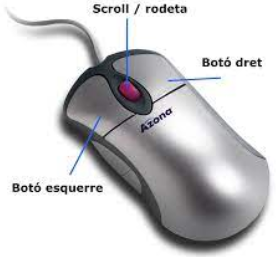
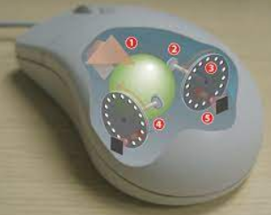
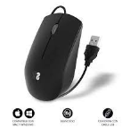
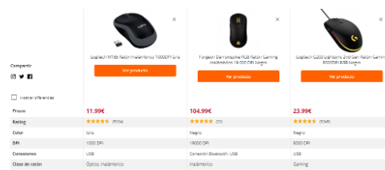

Reconeixement i manipulació dels elements físics del sistema: ratolí

Index
1.Evolució del perifèric
2.Descripció DETALLADA del perifèric
3.Característiques tècniques principals
4.Recull de fotos o imatges de la connexió del perifèric a l’ordinador
5.Captures de pantalla per veure com reconeix l’ordinador el perifèric instal·lat
6.Com es configura aquest perifèric a l’ordinador i quin software utilitza (si és el cas que utilitza algun)
7.Fitxa tècnica i comparativa de diferents models del component existents al mercat. (Preu, models, característiques principals...)
|
1-Evolució del perifèric
Ba evolucionan rapidament com l’ordinado,el ratoli antes tenia una bola i are ja no en tenen

2-Descripció DETALLADA del perifèric
Es un perifèric important per a la interacció amb un ordinador,
i ha evolucionat amb
el temps per a incloure característiques addicionals
per a millorar l'experiència de l'usuari.
3-Característiques tècniques principals
Ses principals serian
Resolució del sensor en punts per polzada (dpi).
Velocitat de resposta del ratolí.
Nombre de botons configurables.
Tipus de connexió, cablejada o sense fil.
Disseny ergonòmic per a una experiència d'ús còmoda.
Roda de desplaçament per a navegar per pàgines web i documents.
Retroalimentació tàctil, com a vibracions.
Il·luminació LED personalitzable.
Programari personalitzable per a ajustar la configuració del ratolí.
6-Com es configura aquest perifèric a l’ordinador i quin software utilitza
Es posaria atraves d’un cable USB

Fotos
Fitxa tècnica i comparativa de diferents models del component existents al mercat. (Preu, models, característiques principals...)

Capturas